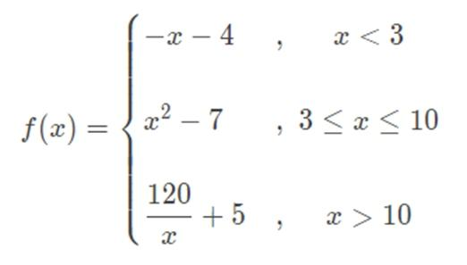

Exercício
Dificuldade
Pontos
Data limite
Créditos
Ficha07_011
Normal
4.0
28/11/2021 00:00:00
(c)M@nso 2021
Formula by Branches II
Implement the function h. The value of x must be entered by the user

Input
Output
1
x : 1.0 f(1.0)= -5.0
3
x : 3.0 f(3.0)= 2.0
4
x : 4.0 f(4.0)= 9.0
10
x : 10.0 f(10.0)= 93.0
15
x : 15.0 f(15.0)= 13.0
120
x : 120.0 f(120.0)= 6.0
3.050
x : 3.05 f(3.05)= 2.3024999999999984
-4.467
x : -4.467 f(-4.467)= 0.46699999999999964
14.858
x : 14.858 f(14.858)= 13.076457127473414
14.385
x : 14.385 f(14.385)= 13.342022940563087
Algorithmi 22.05 Student version (c) Antonio M@nso 2022 Instituto Politécnico de Tomar - All rights reserved